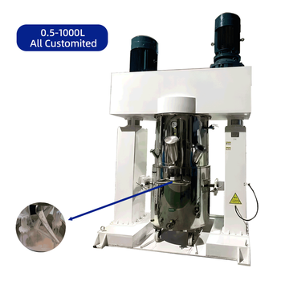

Compact bench-top planetary mixers for R&D and formulation testing. Small batch sizes (5L-20L) with the same mixing principle as production models — enabling seamless scale-up from lab to full production.
When developing new materials or screening formulations, you need equipment that accurately replicates production conditions at a small scale. ZHIDI's lab mixers use identical double planetary rotation and vacuum defoaming technology, so your R&D results translate directly to manufacturing.
Lab results often fail to translate to production. Our lab mixers use the same double planetary principle as production models, ensuring reliable scale-up from 5L to 200L+.
R&D requires testing with expensive or limited materials. Our 5L and 10L models deliver precise, repeatable results with minimal material waste.
R&D demands quick changeover between formulations. Interchangeable agitators and vessels allow rapid testing of different materials and process parameters.
Testing novel composites, nanomaterials, and advanced formulations before committing to production-scale equipment
Rapid evaluation of multiple formulations with different ratios, additives, and processing conditions
Small-batch verification of incoming raw materials and process validation for production consistency

Compact bench-top models with the same double planetary mixing and vacuum defoaming as production units. Seamless scale-up from R&D to manufacturing.
View DetailsCompact grinding unit for lab-scale particle size reduction and dispersion testing. Evaluate grinding performance before production investment.
View DetailsOur 5L, 10L, and 20L models are perfect for R&D. Start small, scale up with confidence using the same mixing technology.
Get Lab Equipment Quote